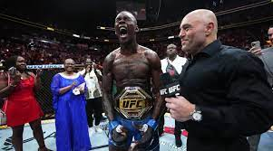

UFC 287, a revenge for honor, Adesanya takes back his belt

In a highly anticipated matchup, Pereira suffered a defeat against Adesanya. Pereira, known for his flashy style and unpredictable moves, was unable to find his rhythm against the skilled and calculated Adesanya. Despite his valiant efforts, Pereira struggled to penetrate Adesanya's defense and was met with precise strikes and counterattacks. Adesanya's superior technique and strategic approach proved to be the deciding factor, ultimately leading him to victory over Pereira.